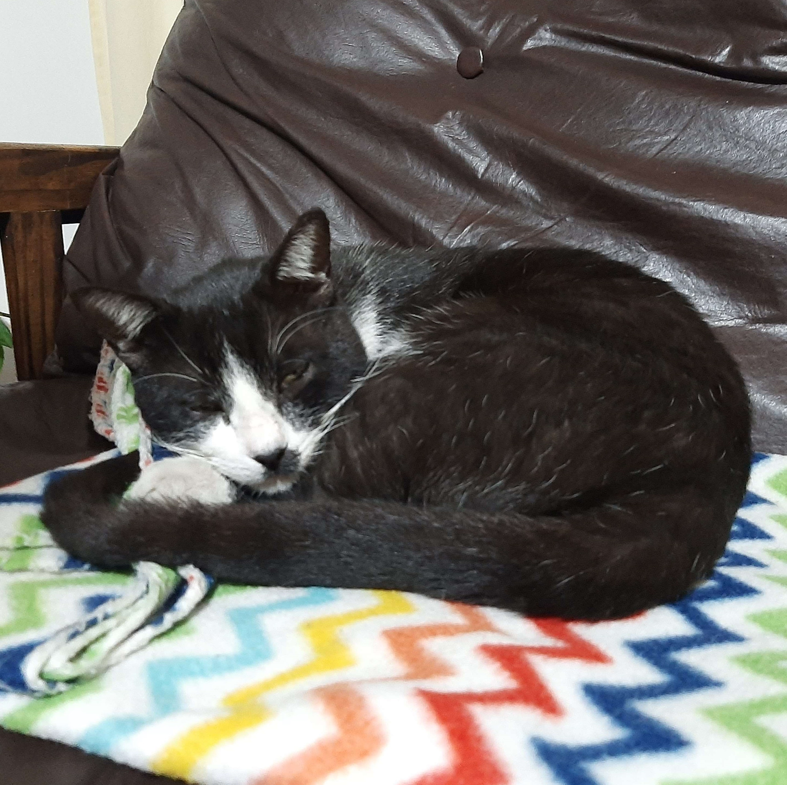
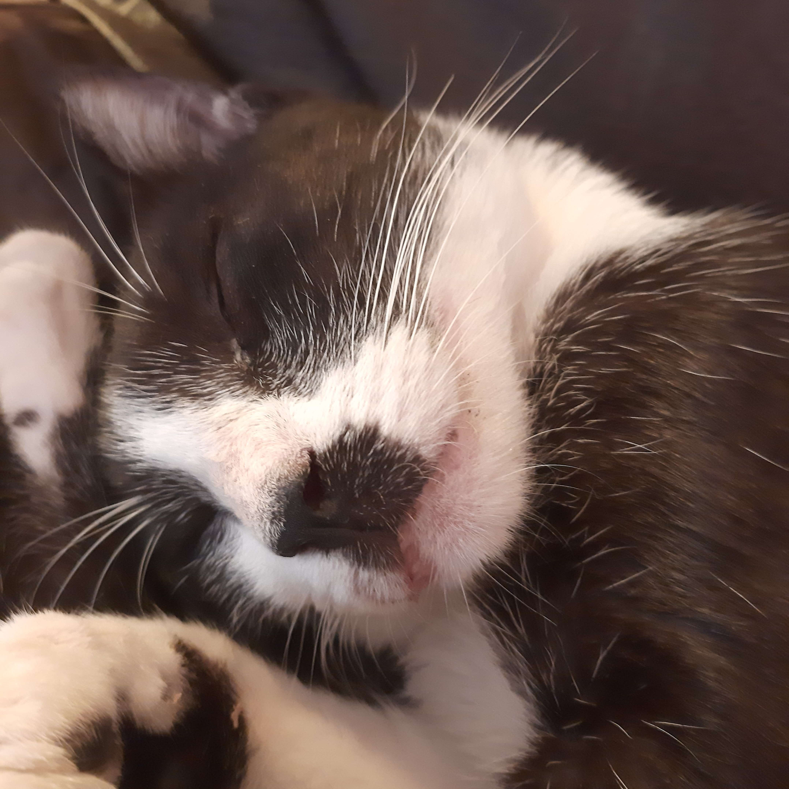
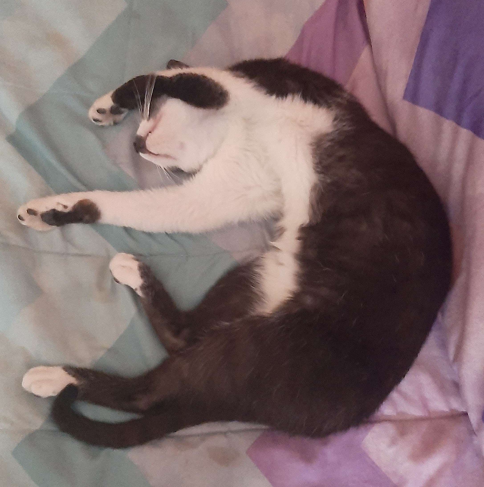

Info



Como ya te podras imaginar, este es mi gato, Drako. Aunque yo le digo pansa :) Me inspire en sus colores y en su edad, el es joven y el sitio es moderno. El es un gato de tipo vaca, y es vaca de tipo smokin.